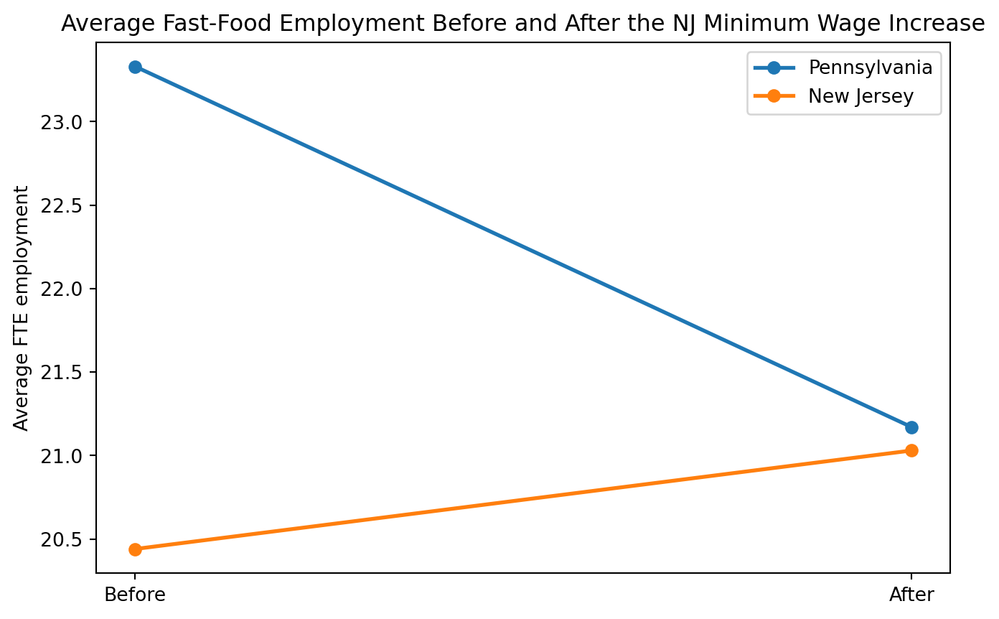

import zipfile
import pandas as pd
import statsmodels.api as sm
import matplotlib.pyplot as plt
with zipfile.ZipFile("njmin.zip", "r") as z:
z.extractall("njmin_files")
colspecs = [
(0, 3), (4, 5), (6, 7), (8, 9), (10, 11), (12, 13), (14, 15), (16, 17), (18, 19), (20, 21),
(22, 24), (25, 30), (31, 36), (37, 42), (43, 48), (49, 54), (55, 60), (61, 62), (63, 68), (69, 70),
(71, 76), (77, 82), (83, 88), (89, 94), (95, 100), (101, 103), (104, 106),
(107, 108), (109, 110), (111, 117), (118, 120), (121, 126), (127, 132), (133, 138), (139, 144),
(145, 150), (151, 156), (157, 158), (159, 160), (161, 166), (167, 172), (173, 178), (179, 184),
(185, 190), (191, 193), (194, 196)
]
names = [
"SHEET", "CHAIN", "CO_OWNED", "STATE", "SOUTHJ", "CENTRALJ", "NORTHJ", "PA1", "PA2", "SHORE",
"NCALLS", "EMPFT", "EMPPT", "NMGRS", "WAGE_ST", "INCTIME", "FIRSTINC", "BONUS", "PCTAFF", "MEALS",
"OPEN", "HRSOPEN", "PSODA", "PFRY", "PENTREE", "NREGS", "NREGS11",
"TYPE2", "STATUS2", "DATE2", "NCALLS2", "EMPFT2", "EMPPT2", "NMGRS2", "WAGE_ST2",
"INCTIME2", "FIRSTIN2", "SPECIAL2", "MEALS2", "OPEN2R", "HRSOPEN2", "PSODA2", "PFRY2",
"PENTREE2", "NREGS2", "NREGS112"
]
df = pd.read_fwf("njmin_files/public.dat", colspecs=colspecs, names=names)
for col in df.columns:
df[col] = pd.to_numeric(df[col], errors="coerce")
df["EMPTOT"] = df["EMPPT"] * 0.5 + df["EMPFT"] + df["NMGRS"]
df["EMPTOT2"] = df["EMPPT2"] * 0.5 + df["EMPFT2"] + df["NMGRS2"]
df["DEMP"] = df["EMPTOT2"] - df["EMPTOT"]
df["DWAGE"] = df["WAGE_ST2"] - df["WAGE_ST"]
df["CLOSED"] = (df["STATUS2"] == 3).astype(int)
df["STATE_NAME"] = df["STATE"].map({0: "PA", 1: "NJ"})Replication of Card and Krueger (1994)
Minimum Wages and Employment: A Case Study of the Fast-Food Industry in New Jersey and Pennsylvania
Introduction
Do higher minimum wages reduce employment? Card and Krueger (1994) examine this question using New Jersey’s increase in the state minimum wage from $4.25 to $5.05 on April 1, 1992. Their strategy is straightforward: compare fast-food restaurants in New Jersey, where the policy changed, with similar restaurants in eastern Pennsylvania, where the minimum wage stayed the same.
The paper became highly influential because it challenged the standard competitive prediction that a binding minimum wage should lower employment. Instead of finding job losses, Card and Krueger report that employment in New Jersey did not fall relative to Pennsylvania after the wage increase.
Main Analysis
Data and Setup
I use the njmin replication data and follow the variable construction in the authors’ original SAS replication file. The key outcome is full-time-equivalent employment, defined as the number of full-time workers plus managers plus one-half of part-time workers. This matches the measure used in the paper and allows a direct comparison with the published tables.
My replication focuses on two parts of the paper: 1. the descriptive before-and-after employment comparisons in Table 3 2. the reduced-form regression in Table 4, column (i)
Replicating the Descriptive Results
I first replicate the paper’s basic before-and-after employment comparison. This is useful because it checks whether the data were loaded correctly and whether the main treatment-control pattern appears in the raw averages before moving to regression analysis.
Before the policy change, average full-time-equivalent employment was about 23.33 in Pennsylvania and 20.44 in New Jersey. After the policy change, average employment was about 21.17 in Pennsylvania and 21.03 in New Jersey. This implies a difference-in-differences estimate of about 2.75, which is extremely close to the published estimate of 2.76.
table3_check = df.groupby("STATE_NAME")[["EMPTOT", "EMPTOT2"]].mean()
table3_check["change"] = table3_check["EMPTOT2"] - table3_check["EMPTOT"]
table3_check.round(2)| EMPTOT | EMPTOT2 | change | |
|---|---|---|---|
| STATE_NAME | |||
| NJ | 20.44 | 21.03 | 0.59 |
| PA | 23.33 | 21.17 | -2.17 |
These averages already show the paper’s main pattern: employment falls in Pennsylvania over the period, while New Jersey experiences a slight increase. That is the opposite of what a simple competitive model would predict after a minimum wage increase.
Replicating the Main Statistical Finding
I next replicate Table 4, column (i), the reduced-form regression of the change in employment on a New Jersey indicator. I use the same sample restriction logic as the authors’ SAS file so that the regression sample matches the published one as closely as possible.
reg1 = df[
df["DEMP"].notna() &
(
(df["CLOSED"] == 1) |
((df["CLOSED"] == 0) & df["DWAGE"].notna())
)
].copy()
X = sm.add_constant(reg1["STATE"])
y = reg1["DEMP"]
model1 = sm.OLS(y, X).fit()
model1.summary()| Dep. Variable: | DEMP | R-squared: | 0.011 |
|---|---|---|---|
| Model: | OLS | Adj. R-squared: | 0.008 |
| Method: | Least Squares | F-statistic: | 3.810 |
| Date: | Tue, 21 Apr 2026 | Prob (F-statistic): | 0.0517 |
| Time: | 18:32:33 | Log-Likelihood: | -1281.6 |
| No. Observations: | 357 | AIC: | 2567. |
| Df Residuals: | 355 | BIC: | 2575. |
| Df Model: | 1 | ||
| Covariance Type: | nonrobust |
| coef | std err | t | P>|t| | [0.025 | 0.975] | |
|---|---|---|---|---|---|---|
| const | -2.1269 | 1.074 | -1.980 | 0.048 | -4.239 | -0.015 |
| STATE | 2.3258 | 1.192 | 1.952 | 0.052 | -0.018 | 4.669 |
| Omnibus: | 34.698 | Durbin-Watson: | 2.168 |
|---|---|---|---|
| Prob(Omnibus): | 0.000 | Jarque-Bera (JB): | 84.340 |
| Skew: | -0.475 | Prob(JB): | 4.85e-19 |
| Kurtosis: | 5.183 | Cond. No. | 4.42 |
Notes:
[1] Standard Errors assume that the covariance matrix of the errors is correctly specified.
My estimated coefficient on the New Jersey dummy is approximately 2.326, with a standard error of about 1.192. The published estimate is 2.33 with a standard error of 1.19, so the replication is extremely close.
Substantively, this means employment in New Jersey fast-food restaurants increased relative to Pennsylvania after the minimum wage increase. Rather than finding evidence of job loss, the replicated regression supports the paper’s main conclusion that employment did not decline in the treated state.
Something Additional
As an additional step, I graph average fast-food employment before and after the policy change for New Jersey and Pennsylvania. While the paper emphasizes tables and regressions, this figure makes the result easier to interpret at a glance.
plot_df = pd.DataFrame({
"PA": [23.33, 21.17],
"NJ": [20.44, 21.03]
}, index=["Before", "After"])
plt.figure(figsize=(8, 5))
plt.plot(plot_df.index, plot_df["PA"], marker="o", linewidth=2, label="Pennsylvania")
plt.plot(plot_df.index, plot_df["NJ"], marker="o", linewidth=2, label="New Jersey")
plt.ylabel("Average FTE employment")
plt.title("Average Fast-Food Employment Before and After the NJ Minimum Wage Increase")
plt.legend()
plt.show()
The figure highlights the same takeaway as the regression. Pennsylvania shows a noticeable decline in employment between the two survey waves, while New Jersey shows a small increase. Visually, the two lines move toward each other after the policy change, which is consistent with the positive difference-in-differences estimate.
Conclusion
Overall, my replication supports Card and Krueger’s main conclusion. Using the authors’ replication data and original sample logic, I recover both the descriptive employment patterns in Table 3 and the reduced-form regression result in Table 4 with very little deviation from the published values.
This makes the central result of the paper hard to dismiss as a coding accident or a data-loading issue. In this setting, the increase in New Jersey’s minimum wage does not appear to reduce fast-food employment relative to the Pennsylvania comparison group. If anything, the estimates point in the opposite direction.